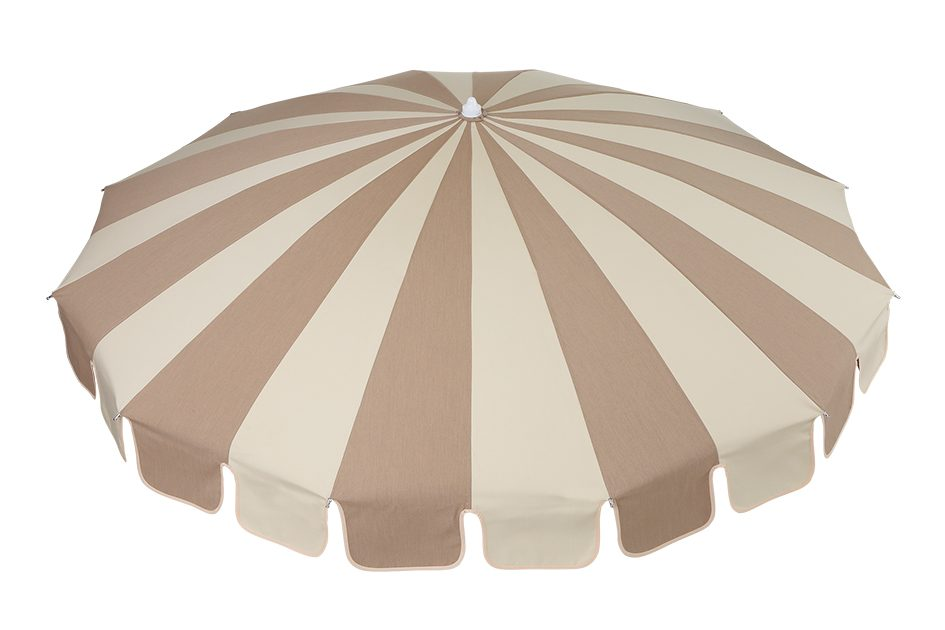

Made in Japan
Parasol
国内で唯一SGマークを取得し、半世紀以上も販売しているロングセラー商品。日本風土の厳しい環境の中でも耐えうる強度・耐候性です。 職人が一本一本手作りしておりますので、生地の種類 / 天幕の仕様 / フレーム色などのフルカスタムや、破損時に部材単位での修理対応が可能です。
5 Sizes
| 品番 | サイズ | 総高 | 上代 |
|---|---|---|---|
| FP40(8本骨) | 1860φ | 2190 | ￥37,000 |
| FP40(10本骨) | 1860φ | 2170 | ￥41,000～ |
| FP40(12本骨) | 1860φ | 2150 | ￥50,000～ |
| FP45 | 2100φ | 2360 | ￥54,000～ |
| FP50 | 2460φ | 2520 | ￥67,000～ |